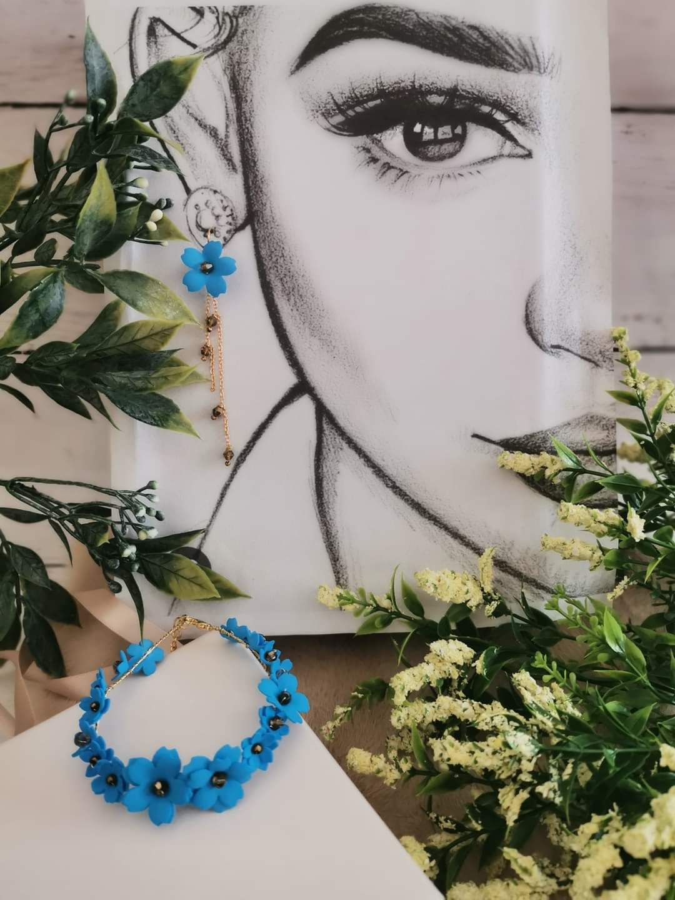
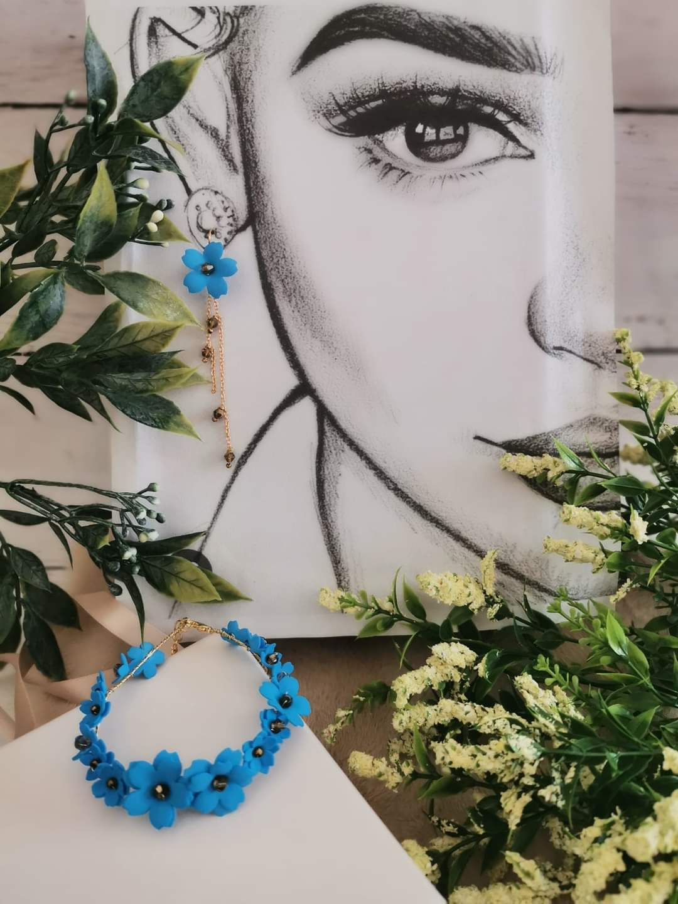

Jestem Yuliia i jestem matką dwójki dzieci. Kiedy urodziłam córkę, chciałam dla niej stworzyć jakąś ozdoba. Moje znajomi były zachwycone i zaczęłam robić ozdoby dla innych osób. Byłam zawsze kreatywna i uczyłam się w szkole artystycznej. Teraz wykonuję również ozdoby na wesele. Kiedy widzę szczęście w oczach narzeczonej, też robię się szczęśliwа.